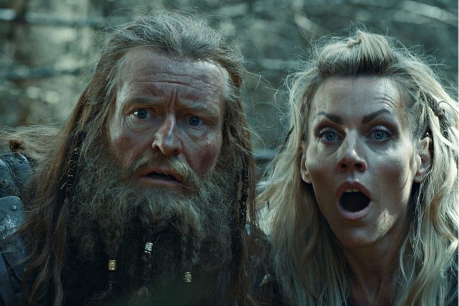
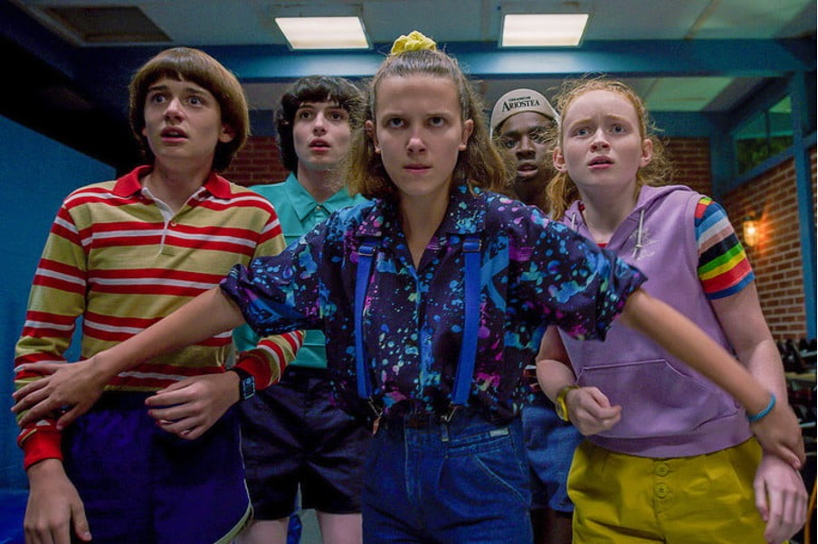
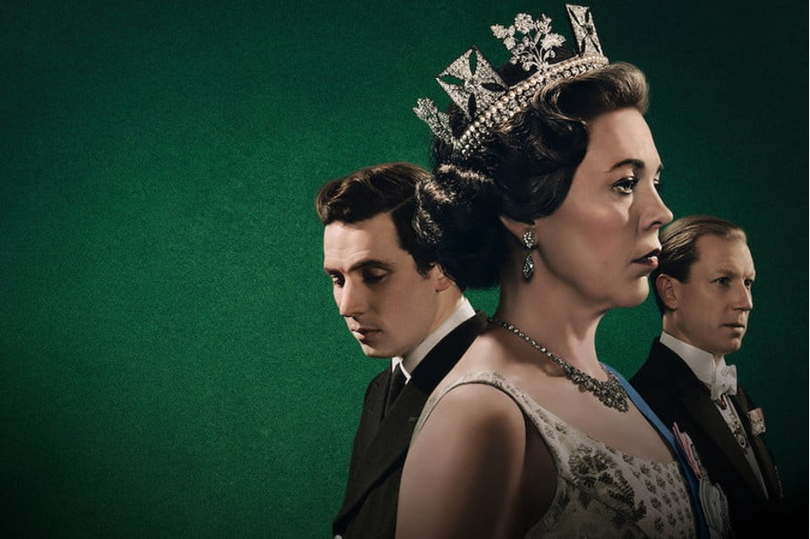
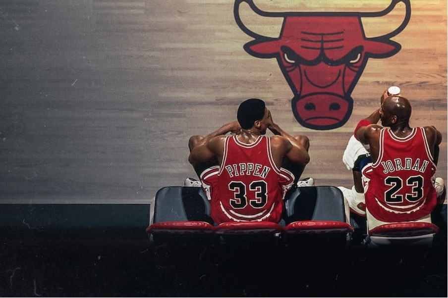
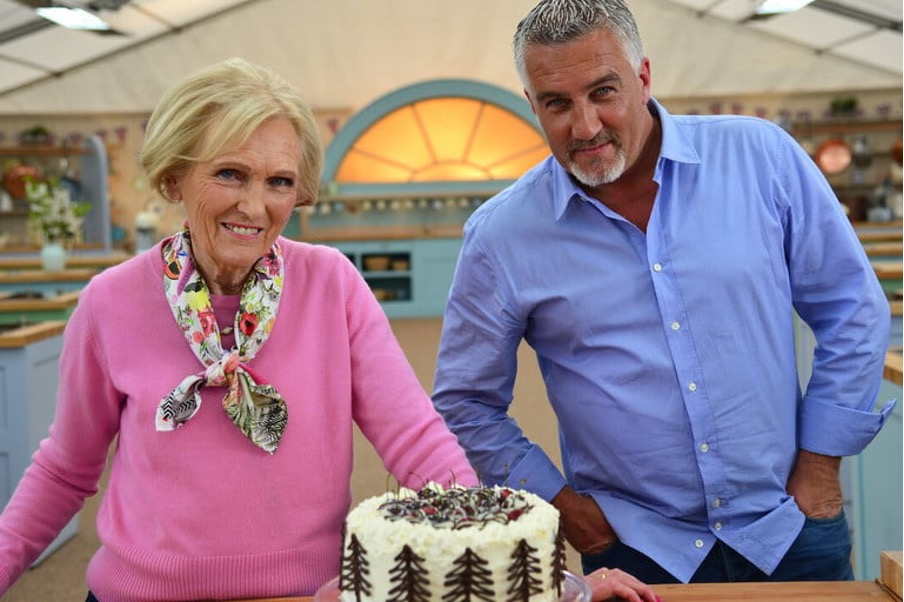
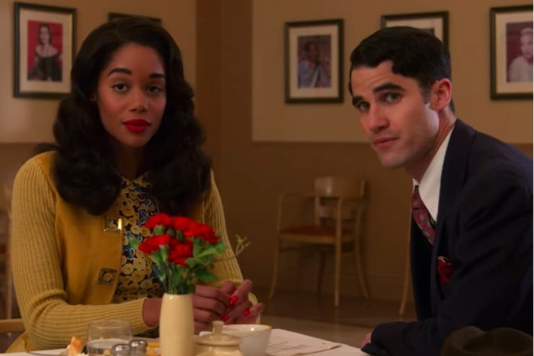
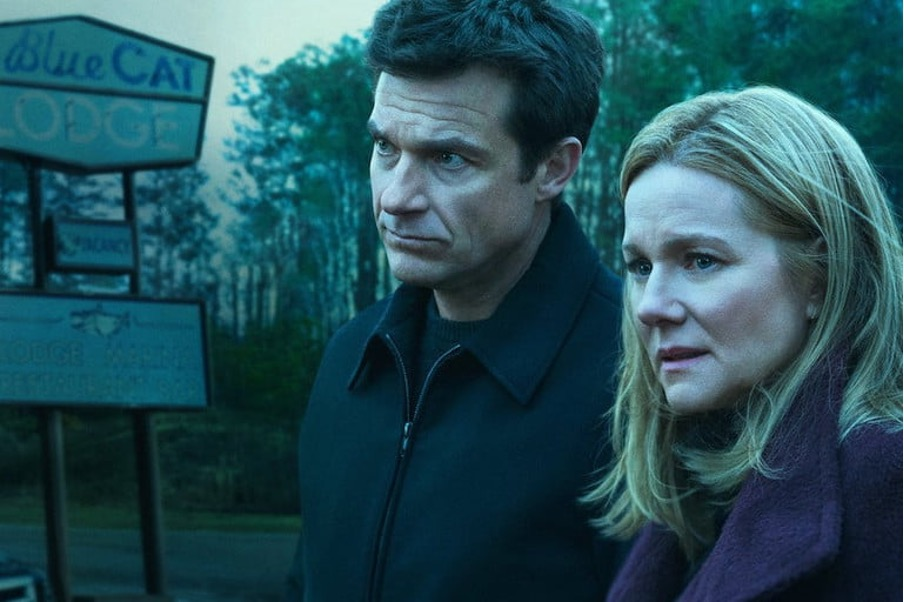
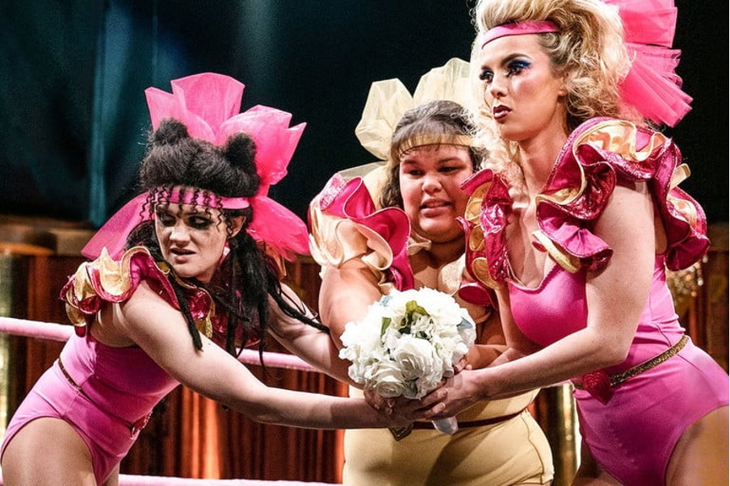
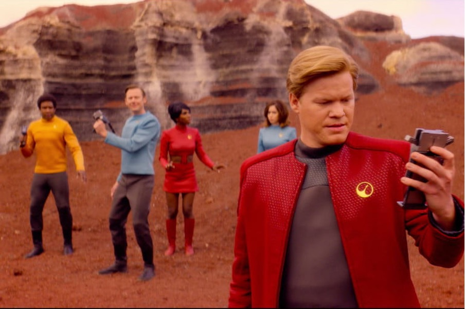

There are so many good shows on Netflix that sometimes it is hard to choose what to watch. Fortunately for you, we have composed a list of the best Netflix series you can possibly watch in 2021. Let’s dive in!

According to Viking experts, Norsemen is one in all the foremost accurate depictions of what life might need been like for these people. On top of that, the show is completely hilarious. It’s an honest series to observe whether or not it isn’t in Netflix’s top ten list at once.
Total episodes: 18
Creators: Jon Iver Helgaker, Jonas Torgersen
Main Cast: Kåre Conradi, Nils Jørgen Kaalstad, Jon Øigarden
IMDb Rating: 7.8

Set among the 1980’s, this sci-fi series takes place throughout a settlement among the center of obscurity, wherever spooky happenings begin to unfold. once a senior high lady goes missing, the residents of the city begin to panic, with no end visible. Meanwhile, a on the face of its mute lady seems in city. She is protected and hidden by a gaggle of young and nerdy boys, UN agency presently notice that she has special powers, and UN agency should discover and struggle a dark force lingering in their city.
Total episodes: 25
Creators: Millie Bobby Brown, Finn Wolfhard, Winona Ryder
IMDb Rating: 7.8

The Crown is not your usual historical series. The show contains a dramatized portrayal of the royal family, filled with royal drama, with some real-life historical events added for emphasis. The story is amazingly acted and dazzlingly told, the royal family’s divisive nature and petty rivalries turning into major wars and scandalous secrets.
Total episodes: 30
Main Cast: Claire Foy, Olivia Colman, Imelda Staunton
IMDb Rating: 8.7

Following the story of the Chicago Bulls in the 90s, The Last Dance is for sure one of the best documentaries you’ll want to watch in 2021. With commentary from Phil Jackson, Michael Jordan, Scotty Pippen, and many others, it’s really worth watching.
Total episodes: 10
Main Cast: Phil Jackson, Michael Jordan, Scottie Pippen
IMDb Rating: 9.2

If you enjoy cooking shows, but don’t enjoy the competitiveness in them, The Great British Baking Show is the series for you. This loving cooking show is all about calming British accents, sweet treats and delicious recipes.
Total episodes: 135
Main Cast: Paul Hollywood, Mary Berry, Mel Giedroyc
IMDb Rating: 8.6

The Queens Gambit is one of the best shows to binge right now on Netflix. After being orphaned at age 9, Beth Harmon discovers her passion for chess thanks to the janitor at her orphanage. After mastering the subject, she goes on to breaking gender norms and defeat grandmasters. She has a lot of challenges as she has to struggle with alcoholism and substance abuse on her way to the top.
Total episodes: 7
Main Cast: Anya Taylor-Joy, Chloe Pirrie, Bill Camp
IMDb Rating: 8.9
If you’re looking for a great Netflix series, Umbrella Academy is a good place to start. The story follows a family of former child heroes who have grown apart and are now in their thirties. But when their adoptive father Sir Reginald Hargreeves dies, they realize they must reunite to save the world.
Total episodes: 20
Main Cast: Elliot Page, Tom Hopper, David Castañeda
IMDb Rating: 7.9
Based on the popular game The Witcher 3: Wild Hunt, this adventurous series does a decent job of filling the void that Game of Thrones left behind. The storyline follows Geralt of Rivia (Henry Cavill) as he travels around fighting vicious monsters, beasts, and after all, the occasional human. full of sorcery, war, and also the undeniable performance of Cavill and Anya Chalotra, this is often one among the most effective shows you’ll find today. Though use caution watching these episodes too fast, season 2 doesn’t arrive until 2021.
Total episodes: 8
Main Cast: Henry Cavill, Freya Allan, Yasen Atour
IMDb Rating: 8.3
Rather than simply giving fashion tips, recipes, and a makeover, the style specialists in Queer Eye give apt social statement to everybody they work with. All in all, it’s an easy show to binge and may seemingly leave you with associate honest feeling on the among. There are a lot more fashion shows on Netflix, but this is by far the most interesting one.
Total episodes: 17
Main Cast: Bobby Berk, Karamo Brown, Tan France, Antoni Porowski, Jonathan Van Ness
IMDb Rating: 8.5

Set in post-World War II Hollywood, this mini-series tells the story of a bunch of aspiring actors and filmmakers. Each main character faces the dark side of Tinseltown as they struggle to form a controversially progressive movie.
Total episodes: 7
Main Cast: David Corenswet, Darren Criss, Laura Harrier
IMDb Rating: 7.6

The Byrdes are just a normal family living in Chicago with nothing to cover. aside from the daddy, Marty Byrde (Jason Bateman), who with great care happens to be the highest money launderer for one in every of the biggest drug cartels in Mexico. When things go South, Marty and also the family are forced to relocate to the Missouri Ozarks.
Total episodes: 30
Main Cast: Jason Bateman, Laura Linney, Sofia Hublitz
IMDb Rating: 8.3
This wonderful show all began throughout the motion-picture photography of Favreau’s hit motion picture, Chef. Roy Choi had been brought on as an advisor for the film, and thru that time, the two finished up bonding over the cookery method. Throughout the series, the lightsome food couple travels around the country cookery with celebrities, celebrated chefs, and more. They additionally showcase a variety of delicious recipes, taking you gradual through the inventive method. The cook Show is in addition one in each of our prime picks for the foremost effective cookery shows on Netflix straight off.
Total episodes: 20
Main Cast: Jon Favreau, Roy Choi
IMDb Rating: 8.2
True-crime podcasts and true-crime shows are great but adding a touch of theatrics into the combo never hurt anyone. Mindhunter could be a Netflix Original drama supported actuality story of a person at the forefront of profiling serial killers. The show follows G-man Holden Ford (Jonathan Groff) as he and his team interview serial killers across the U.S. in a shot to grasp why they are doing what they are doing.
Total episodes: 19
Main Cast: Jonathan Groff, Holt McCallany, Anna Torv
IMDb Rating: 8.6
This modern update to associate the previous classic is altogether the best crime dramas to look out on Netflix. The series follows character (Benedict Cumberbatch) and Dr. John Watson (Martin Freeman) while the couple uses an expert eye to solve 21st-century crimes.
Total episodes: 15
Main Cast: Martin Freeman, Benedict Cumberbatch
IMDb Rating: 9.1
If you’re an admirer of sci-fi movies and end up in need of a fresh story, Altered Carbon is here to deliver that freshness. Set within the future, this Netflix show offers a glance into a world where consciousness may be digitized and stored. this enables humans to survive beyond the death of their physical bodies, with something near immortality.
Total episodes: 18
Main Cast: Renée Goldsberry, Chris Conner, Will Yun Lee
IMDb Rating: 8.1
Feel smart follows sick addict and comedian Mae Martin as she tries to navigate her own habit-forming behaviours in both life and love. Even though there is quite a little of drama, this show continues to be a comedy at its heart and may have you chuckling quite sometimes.
Total episodes: 6
Creators: Jon Iver Helgaker, Jonas Torgersen
Main Cast: Charlotte Ritchie, Mae Martin, Sophie Thompson
IMDb Rating: 7.5
This 9-time Emmy winning comedy follows a fashionable video-store owner Johnny Rose (Eugene Levy) as he and his family suddenly find themselves completely broke. they're forced to uproot their lives and regroup to a podunk town called Schitt’s Creek that Rose originally purchased as a joke. Though the primary season starts out a small amount slow, each short episode expands the dynamic of the characters to new and hilarious heights.
Total episodes: 66
Main Cast: Dan Levy, Eugene Levy, Catherine O’Hara
IMDb Rating: 8.4

This dramedy follows the non-public and professional lives of the Gorgeous Ladies of Wrestling, or GLOW for brief, in l. a. during the 1980s. Though this Netflix original series is entirely fiction, it's supported the particular GLOW girls from the mid-80s.
Total episodes: 30
Main Cast: Marc Maron, Alison Brie, Betty Gilpin
IMDb Rating: 8.0
You can solely watch those classic horror movies such an outsized quantity of times before your bloodthirst demands one thing contemporary. The Haunting of Hill house is a horror/mystery series that follows the lives of a family fighting haunting recollections of their childhood home. The plot jumps between past and present, revealing a lot of the terrors that dwell within Hill House.
Total episodes: 10
Main Cast: Kate Siegel, Henry Thomas, Oliver Jackson-Cohen
IMDb Rating: 8.7

In a wild mixture of Sci-Fi themes and terrifyingly not-so-distant-future technology, Black Mirror will thrill, entice, and possibly scare you. Each episode is different, meaning you'll be able to watch them completely out of order and still enjoy a gripping short film with guest stars and eerie concepts. whether or not this show has been around for a long time, it still challenges your comfort level with the new and top-of-the-line technology that you simply may have seen glimpses of in popular culture, normally showing its potentially ugly side.
Total episodes: 22
Main Cast: Hannah John-Kamen, Daniel Lapaine, Michaela Coel
IMDb Rating: 8.8
This was our top 20 series to watch on Netflix in 2021. We will come back soon with top 20 movies to watch on Netflix in 2021. Until then, here are some topics you may also be interested in. Have a great day!